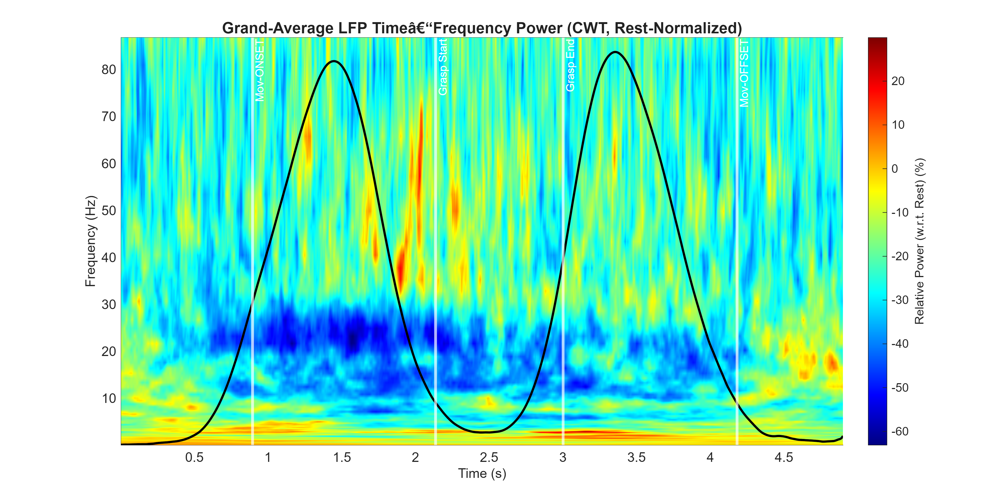
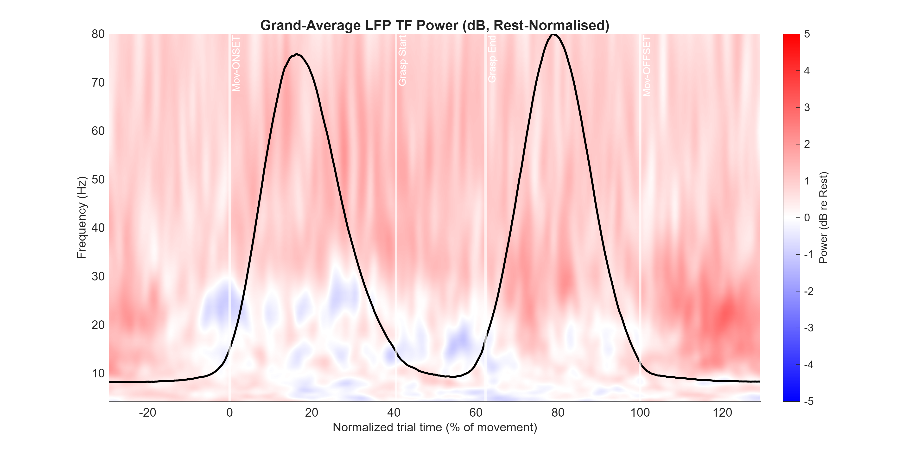
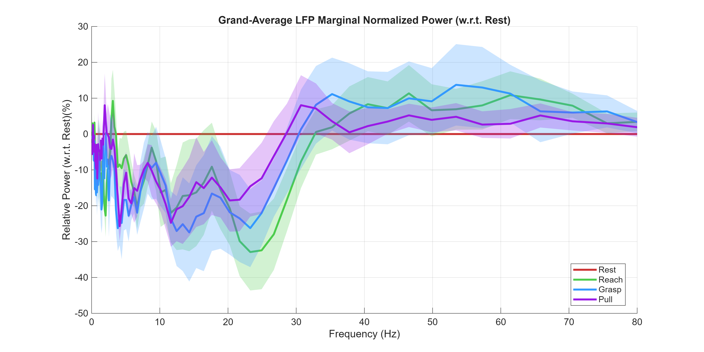
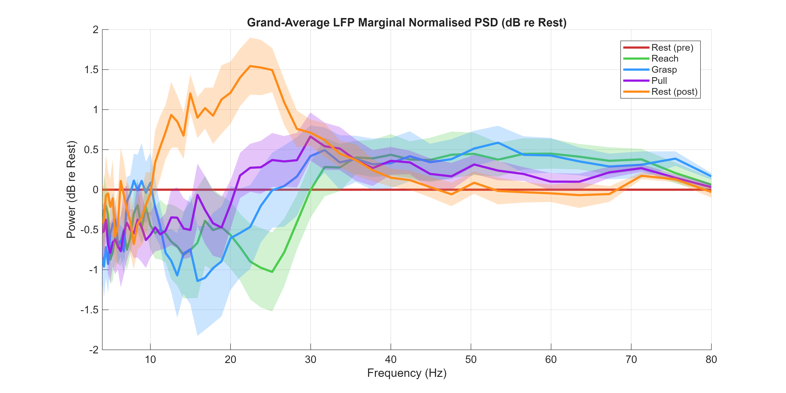
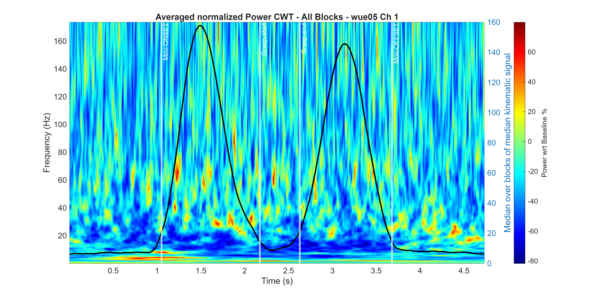
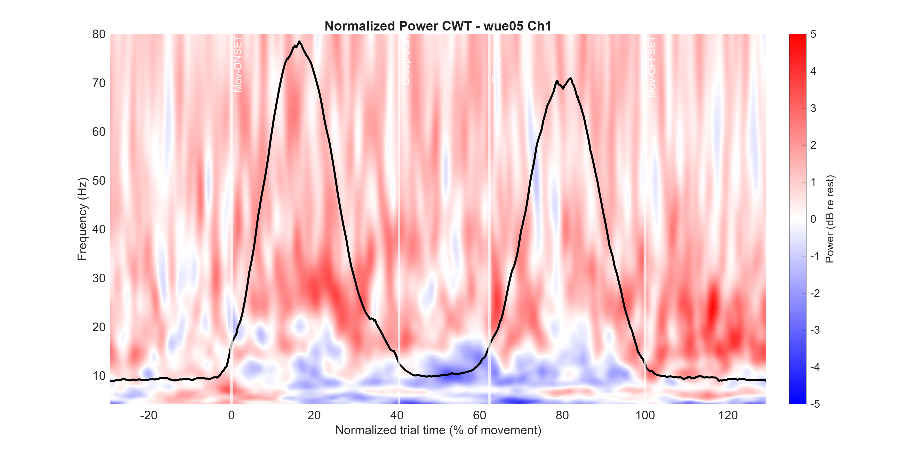

Reach-to-grasp (self-paced), 8 PD subjects, contralateral-hemisphere STN channel. Identical input data —
the two pipelines differ only in method. Figures generated from
F:\Projects\Parkinson_ReachGrasp\Reprocessing, R2025a + EEGLAB.


Both maps show the two velocity peaks of the task in the overlaid kinematic trace (peak-reach and peak-pull velocity) — a good sanity check that the warping is aligned. What differs:
min/max, so outlier bursts compress the scale and
most of the map sits in undifferentiated mid-green. v2's symmetric ±5 dB shows graded modulation: a broad,
modest power increase (pink) with the beta dips standing out.[1,80] Hz.

Both agree on the movement effect — reach (green) and grasp (blue) show the deepest beta drop, pull (purple) milder. The magnitudes look very different (v1 ≈ −33 %, v2 ≈ −1.2 dB) but that is a units difference, not a disagreement (see caveat). Note also v1's much wider SEM bands: its three-stage interpolation injects between-subject variance that v2's single warp avoids.


At the single-subject level the difference in noise is obvious. v1 is grainy and speckled with isolated gamma "hot pixels" (individual beta/gamma bursts surviving the linear interpolation), and the frequency axis stretches to ~160 Hz. v2 resolves a clean beta-ERD trough around each velocity peak. Same data, same channel — the texture difference is entirely methodological.
| Aspect | v1 — what you see | v2 — what you see |
|---|---|---|
| Post-movement beta rebound | Not representable (no rest-post phase; folded into baseline) | Clear +1.5 dB rebound in 18–28 Hz (orange trace) |
| Beta ERD (movement) | Present, smeared across whole window | Present, localised under each velocity peak |
| Map texture | Grainy; isolated gamma hot-pixels | Smooth; graded modulation |
| Colour scale | min/max → outlier-compressed, mostly mid-green | symmetric ±5 dB → physiological gradation |
| Between-subject SEM | Wide (triple interpolation adds variance) | Tighter (single warp to global grid) |
| Time axis | Seconds from averaged latencies (fictitious trial) | % of movement, onset/offset marked |
| Frequency axis | Uncontrolled (Morse default, to ~160 Hz/subject) | Fixed [1,80] Hz, identical across subjects |
(P−bl)/bl·100 and v2 reports
decibels 10·log10(P/bl); e.g. −33 % ≈ −1.7 dB and +1.5 dB ≈ +41 %. The traces are therefore
not on the same axis — the meaningful comparison is the pattern (which effects appear, where, how cleanly),
not the numbers. The two pipelines also use different baselines (v1: rest pre+post; v2: rest pre only), which is exactly
why the PMBR survives in v2 and vanishes in v1.
Generated by re-running both scripts unmodified except for path and output directory, over the same 8 subjects and same
contralateral STN channel.
v1 = TF_analysis_LFP.m → RESULTS_compare\v1\;
v2 = TF_analysis_LFP_v2.m → RESULTS_compare\v2\.
Full-resolution per-subject figures (all 8 subjects, normalised + non-normalised) are in those folders on
F:\Projects\Parkinson_ReachGrasp\Reprocessing.